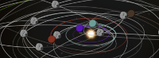
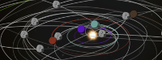

|  |
Custom Asteroids
1.7
A mod for Kerbal Space Program that lets users control where asteroids appear
|
|  |
Custom Asteroids
1.7
A mod for Kerbal Space Program that lets users control where asteroids appear
|
Asteroid definition files declare where asteroids (or comets, or other small bodies) appear in the game. There are three example files in the Custom Asteroids download, both in GameData/CustomAsteroids/config/. However, any .cfg file anywhere in GameData that follows the same format will be parsed by Custom Asteroids. If you are distributing asteroid definition files with your mod, please put them in your mod directory rather than the CustomAsteroids directory so that players know where the files came from. If you need to suppress or modify the default asteroid definitions, they are fully ModuleManager-compatible.
Most files will consist of a single AsteroidSets section. Within the section, each ASTEROIDGROUP block represents a single group of stable orbits. Each INTERCEPT block represents asteroids on a collision (or near-collision) course with a celestial body. INTERCEPT blocks are only available starting from Custom Asteroids 1.3.
Starting from Custom Asteroids 1.3, config files may also include a CustomAsteroidPlanes section. This feature allows asteroid groups to be oriented correctly in inclined solar systems, such as those provided by the RealSolarSystem or Harder Solar System mods. Most users shouldn't need it.
Older config files may have DEFAULT blocks that represent asteroids on stock orbits. With the introduction of INTERCEPT blocks in version 1.3, DEFAULT blocks are deprecated and should not be used in new config files. Support for DEFAULT blocks will be removed in Custom Asteroids 2.0.
The most frequently used fields in each ASTEROIDGROUP block are the following:
name: a unique, machine-readable name. Must not contain spaces.title: a descriptive name. If RenameAsteroids = True is set in the settings file, this name will replace the generic "Ast." in the asteroids' name. May be a localization string. If the title contains the string "<<1>>", it will be replaced by the asteroid's unique ID; otherwise, the ID will be appended to the title.centralBody: the name of the object the asteroids will orbit. Must exactly match the internal (i.e., English) name of an in-game celestial body.spawnRate: must be a nonnegative number. If Spawner = FixedRate is set in the settings file, this value gives the number of asteroids detected per Earth day. If Spawner = Stock, only the ratio to all the other spawnRate values matters.orbitSize: a block describing how far from centralBody the asteroid's orbit is found. Parameters:type: Describes which orbital element is constrained by min and max. Allowed values are SemimajorAxis, Periapsis, or Apoapsis. Default is SemimajorAxis.min: The smallest value an asteroid from this group may have, in meters. Always measured from the center of centralBody, regardless of the value of type.max: The largest value an asteroid from this group may have.eccentricity: a block describing what eccentricities an asteroid from the group may have.avg: the average eccentricity of an asteroid in this population. Must be a nonnegative number. Any specific asteroid may have any eccentricity; it is even possible, though very unlikely, that an asteroid will appear on an unbound orbit.inclination: a block describing what inclinations an asteroid from the group may have.avg: the average inclination of an asteroid in this population, in degrees. Should be a nonnegative number. As with eccentricities, you may occasionally get some extreme values.The most frequently used fields in each INTERCEPT block are the following:
name, title, spawnRate: have the same meanings as abovetargetBody: the name of the object the asteroids will approach. Must exactly match the internal (i.e., English) name of an in-game celestial body.approach: a block describing how far from targetBody the asteroid would pass if not for the planet's gravity. Parameters:max: the maximum approach distance any asteroid from this group will have, in meters. The special value Ratio(<targetBody>.soi, 1.0) allows all trajectories that intercept the target's sphere of influence, no matter where (fill in <targetBody> with the correct name).warnTime: a block describing how long before closest approach the asteroid may be detected. Negative values are allowed and represent detections after closest approach. Parameters:min: The minimum lead time (i.e., the latest moment) at which an asteroid may be detected, in seconds.max: The maximum lead time at which an asteroid may be detected.The average number of known asteroids in each group – if none are tracked – will equal spawnRate times the average of Options.MinUntrackedTime and Options.MaxUntrackedTime. Set the value for spawnRate accordingly.
Each ASTEROIDGROUP or INTERCEPT block has several subfields describing how asteroid parameters are generated. Each parameter is a block with the following values:
dist: the distribution from which the parameter will be drawn. Allowed values are Uniform, LogUniform, Gaussian (Normal also accepted), LogNormal, Rayleigh, Gamma, Beta, or Exponential. Note that the Beta distribution is rescaled from its usual interval (0, 1) to (min, max). LogNormal, Gamma, and Beta are only available in Custom Asteroids 1.3 or later.min: the minimum value of the parameter. Currently used by Uniform, LogUniform, and Beta.max: the maximum value of the parameter. Currently used by Uniform, LogUniform, and Beta.avg: the average value of the parameter. Currently used by Gaussian, LogNormal, Rayleigh, Gamma, Beta, and Exponential.stddev: the standard deviation of the parameter. Currently used by Gaussian, LogNormal, Gamma, and Beta.Allowed values of min, max, avg, and stddev are:
A string of the form 'Ratio(<planet>.<stat>, <value>)'. Whitespace is ignored. <planet> is the name of a celestial body, <value> is a floating-point multiplier, and <stat> is one of
For example, the string Ratio(Jool.sma, 0.5) means "half of Jool's semimajor axis, in meters". Time and velocity stats are only available in Custom Asteroids 1.3 or later.
Offset(Duna.per, -50000000) means "50,000,000 meters less
than Duna's periapsis", or just beyond its sphere of influence.In Custom Asteroids 1.3 or later, an ASTEROIDGROUP block may have a field called refPlane. This field contains the name of a reference frame defined in a CustomAsteroidPlanes section (which need not be in the same file). All orbits will be created relative to that reference frame. If the refPlane field is omitted, orbits will use the default reference frame.
Each ASTEROIDGROUP block can have up to eight parameters, six of which correspond to orbital elements:
orbitSize: one of three parameters describing the size of the orbit, in meters. This is the only orbital element that must always be given. All distances are from the body's center. Distribution defaults to LogUniform if unspecified. The orbitSize node also has two additional options:type: may be SemimajorAxis, Periapsis, or Apoapsis. Defaults to SemimajorAxis.min, max, or avg fields of orbitSize may take a string of the form 'Resonance(<planet>, <m>:<n>)', where <planet> is the name of a celestial body, and <m> and <n> are positive integers. The string will be interpreted as the semimajor axis needed to get an m:n mean-motion resonance with <planet>. For example, the string Resonance(Jool, 2:3) gives the semimajor axis to complete 2 orbits for every 3 orbits of Jool – in other words, the semimajor axis of Eeloo.eccentricity: the eccentricity of the orbit. If omitted, defaults to circular orbits. Distribution defaults to Rayleigh if unspecified. If the distribution is changed to one that uses min and max, these values default to the 0-1 range.inclination: the inclination of the orbit, in degrees. If omitted, defaults to uninclined orbits. Distribution defaults to Rayleigh if unspecified. The inclination node has one additional option:dist may take the value Isotropic, which will randomly orient the orbital plane if ascNode is kept at its default. min, max, avg, and stddev are ignored for an Isotropic distribution.periapsis: the position of the periapsis, in degrees. If omitted, allows any angle. Distribution defaults to Uniform if unspecified. The periapsis node also has one additional option:type: the convention for placing the periapsis. May be Argument (angle from ascending node) or Longitude (absolute position). Defaults to Argument.ascNode: the longitude of the ascending node, in degrees. If omitted, allows any angle. Distribution defaults to Uniform if unspecified.orbitPhase: one of two parameters describing the asteroid's position along its orbit, in degrees. If omitted, allows any angle. Distribution defaults to Uniform if unspecified. The orbitPhase node also has two additional options:type: the convention for measuring the asteroid's progress along its orbit. May be MeanAnomaly (value proportional to time since periapsis) or MeanLongitude (value proportional to time since zero phase angle). Defaults to MeanAnomaly.epoch: the time at which the mean anomaly or mean longitude is measured. May be GameStart or Now (the time at which the asteroid appears). Defaults to GameStart.Starting from Custom Asteroids 1.3, an optional detectable block allows asteroids to appear only under certain conditions. If no block is provided, asteroids will always appear. The block consists of an optional field and a list of conditions:
combine: this field may be set to either And (all conditions must be met for asteroids to appear) or Or (any condition must be met). If omitted, defaults to And.conditions: this block contains a list of conditions, one per line, prefixed by 'condition ='. Conditions must have the form '<planet>.<test>'. <planet> is the internal (English) name of a celestial body, and <test> is one ofKerbin.nowlanded includes unlauched vessels on the pad.Any test may have "Manned" or "Unmanned" appended to restrict the test to vessels that can or cannot support crew, respectively. For example, Jool.noworbitUnmanned means that asteroids will only appear while a probe is in orbit around Jool.
Starting from Custom Asteroids 1.3, an optional asteroidTypes block allows asteroids to have parts other than "PotatoRoid", the stock asteroid part. If no block is provided, all asteroids will be PotatoRoids. The block consists of a list of entries in the format 'key = <weight> <part>'. <weight> must be a positive number, giving the relative ratios of different asteroid types. <part> must be the name of the part used to represent the asteroid. Custom Asteroids ships with four such parts, "CaAsteroidMetal", "CaAsteroidCarbon", "CaAsteroidIcy", and "CaCometActive". The "Ca" prefix in these names is reserved for future enhancements to Custom Asteroids, and third-party modders are asked not to use it.
Starting from Custom Asteroids 1.7, an optional spawnMax field allows asteroids to appear only up to a fixed count (for example, spawnMax = 1 will create unique asteroids). Both tracked and untracked asteroids count toward the limit. Combining a high spawn rate and a low spawn limit is not encouraged
Each INTERCEPT block can have up to five parameters:
approach: the closest approach distance, in meters. This is one of two parameters that must always be given. Distribution defaults to Uniform if unspecified. min defaults to 0 if unspecified. The approach node has one additional option:type: the definition of closest approach used. May be ImpactParameter (distance ignoring the planet's gravity) or Periapsis (distance after allowing for planet's gravity, but ignoring the SoI boundary). Defaults to Periapsis. Both types are measured from the center of the target body.warnTime: the time before closest approach, in seconds, at which the asteroid is discovered; does not account for the target planet's gravity. This is one of two parameters that must always be given. Distribution defaults to Uniform if unspecified. Negative values of min or max are allowed and represent discoveries after closest approach.vSoi: the speed, in meters per second, at which the asteroid enters the planet's sphere of influence. This indirectly controls the asteroid's eccentricity and inclination (higher approach speeds correspond to eccentric, inclined orbits). If omitted, a range of speeds that allows easy capture is used. Distribution defaults to LogNormal if unspecified.spawnMax: a limit on the number of asteroids that can appear at a time. This block works exactly as for ASTEROIDGROUP.detectable: a set of conditions that need to be met before asteroids appear. This block works exactly as for ASTEROIDGROUP.asteroidTypes: a list of asteroid parts used to represent asteroids. This block works exactly as for ASTEROIDGROUP.In Custom Asteroids 1.3 or later, a CustomAsteroidPlanes section contains one or more REFPLANE or REFVECTORS blocks. These blocks define coordinate planes for planetary systems that aren't in KSP's horizontal plane. Mods that create a tilted solar system should define at least one block to represent the plane of the system; if KSP ever allows support for axial tilts, mods that make use of the feature may wish to define planes specific to each planet as well.
Each REFPLANE block has four parameters, all required:
name: a unique, machine-readable name. Must not contain spaces.longAscNode: the longitude of the ascending node of the plane, in KSP's default coordinate system. Changing this value rotates the plane around the game's vertical axis.inclination: the inclination of the plane relative to the game's horizontal plane.argReference: the angle between the reference direction (which defines zero longitude for individual asteroid orbits) and the plane's ascending node.longAscNode, inclination, and argReference use the same syntax as the min, max, avg, and stddev fields of asteroid definition blocks, so you can, for example, align a reference plane with the orbital plane of a particular celestial body.
Each REFVECTORS block has three parameters, all required:
name: as abovenormVector: a list of three comma-separated floating-point numbers indicating the normal vector of the desired plane. Any vector other than the zero vector is allowed.refVector: a vector pointing in the desired reference direction. Must not be the zero vector, and must not be parallel to normVector.The CustomAsteroidPlanes section may also have a single freestanding field, defaultRef. This field contains the name of a REFPLANE or REFVECTORS block. If defined, all ASTEROIDGROUP blocks will be oriented relative to defaultRef, unless they override the default using a refPlane field. Note that if multiple CustomAsteroidPlanes sections define a defaultRef, only one will be used.
 1.8.10
1.8.10